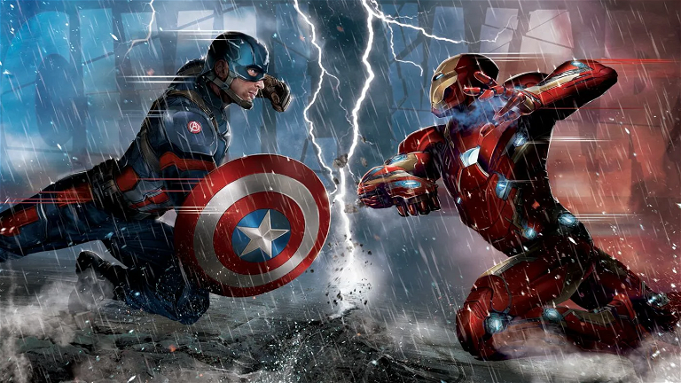

MAPEADO DE IMÁGENES EN HTML 29/11/2023
El mapeado hace referencia a la posibilidad de asignar una región de una foto o zona de una imagen
para incrustarle un enlace
usaremos map y esta nos permitirá identificar zonas en imágenes para redireccionar dicha area
a un link que queramos
ESTRUCTURA
- map:vamos a usar y establecer el mapeado
- name: Es un atributo que se añade a la imagen que debde coincidir con el que
hemos establecido en el usemap
- usemap: Un atributo que se añade en la imagen para indicar que vamos a usar el mapeado
Se usa así: usemap=#el_nombre_que_sea
- save:Especificar la región que queremos mapear, existen 4 tipos:
default, circle, rect y poly
- default: Es un atributo que indica que la región del mapeado es por defecto (En todo el documento)
- rect: Es un atributo que indica que la región es rectangular. Para poder establecer el area
usaremos coordenadas por el punto x, y del vertice superior de la imagen y el punto x,y del vértice inferior derecho
- circle: Atributo indica que la región es circular, para establecerlo se toma un punto central
x,y y se le asigna un valor del radio de la circunferencia
- poly:La región va a ser poligonal, se debe tomar por lo menos 3 o más puntos de coordenadas x,y
y para establecer sus valores se seguirá el sentido de las agujas del reloj
- coordenadas: indican la posición en la pantalla del area a mapear.

Si cambiamos el tamaño con witdh y height y queremos hacer el mapeado, guardamos la foto para trabajar
con ella y le damos el ancho y largo que queramos para trabajar la imagen